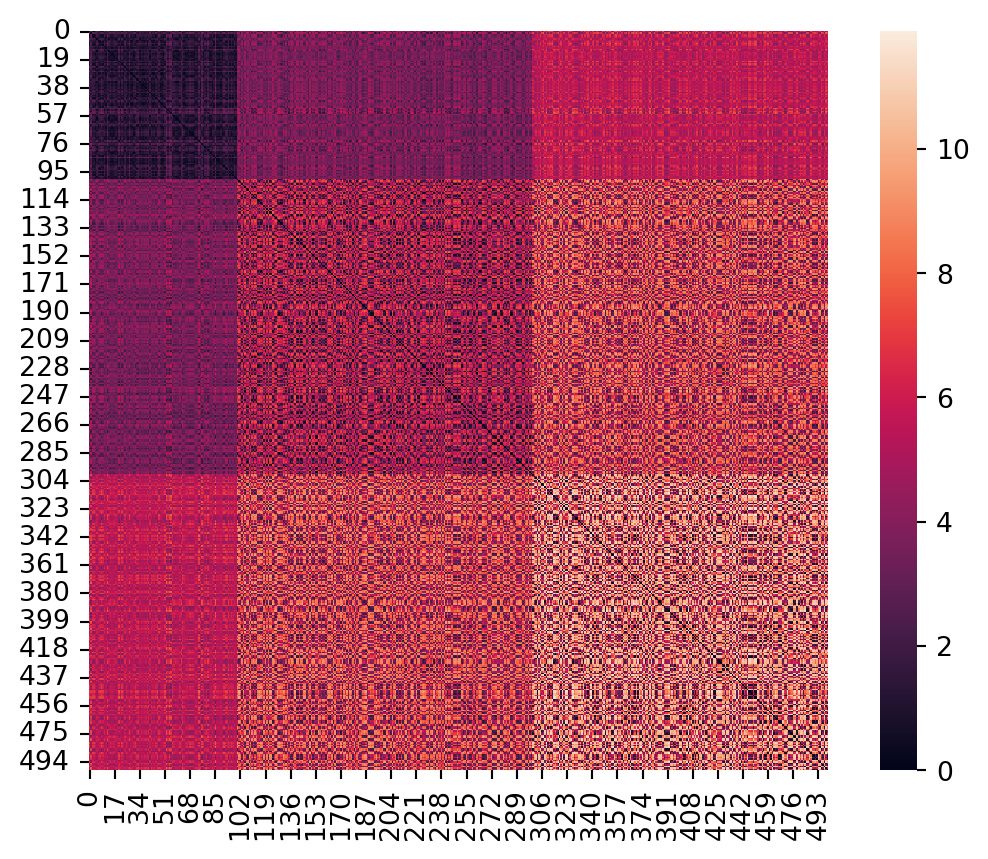
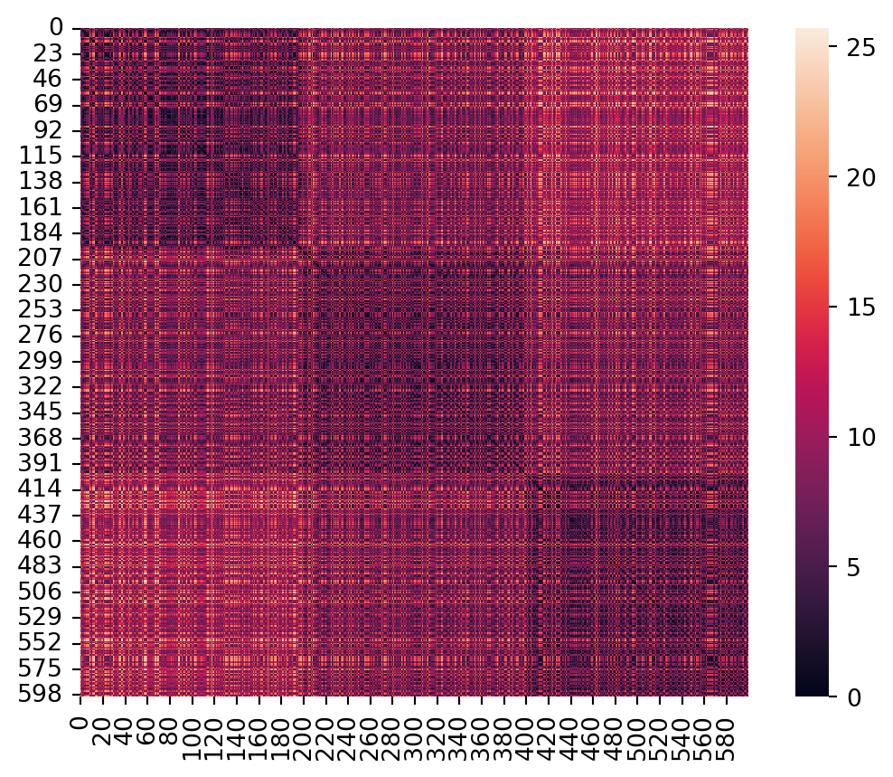
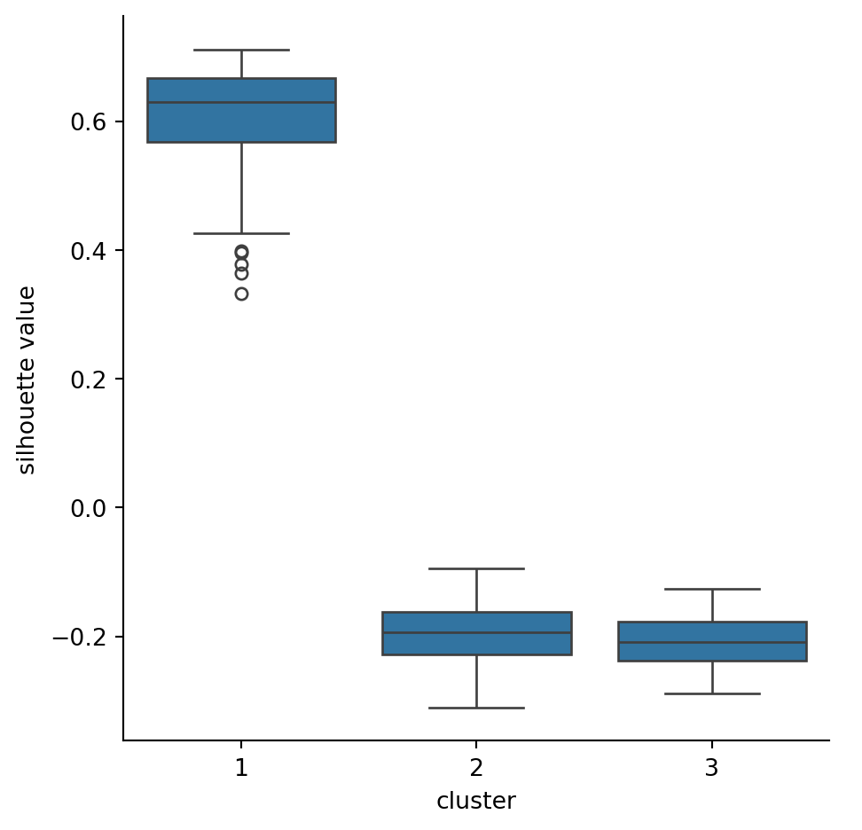

In supervised learning, the data samples are supplied with labels, and the goal of the learner is to generalize the examples to new values. In unsupervised learning, there are no labels. Instead, the goal is to discover structure that is intrinsic to the feature matrix. Common problem types in unsupervised learning are
Clustering
Determine whether the samples roughly divide into a small number of classes.
Dimension reduction
Find a reduced set of features, or create a small set of new features, that describe the data well.
Outlier detection
Find anomalous values in the data set and remove them or impute replacements.
In this chapter we will look at clustering. The goal is to assign each feature vector a number from 1 to \(k\), where \(k\) is much smaller than the number of samples. More formally:
Definition 6.1 Given an \(n\times d\) feature matrix with rows \(\bfX_1,\ldots,\bfX_n\), a clustering is a labelling function \(c\) defined on the feature vectors such that \[
c(\bfX_i) \in \{ 1,2,\ldots, k \} \text{ for all } i=1,\ldots,n,
\] where \(k\) is a positive integer. The cluster\(C_j\) is the collection of all \(\bfX_i\) such that \(c(\bfX_i)=j\).
The clusters \(C_1,\ldots,C_k\) divide the samples into \(k\) dijoint subsets. Depending on the algorithm, the number of clusters \(k\) may be imposed (i. e., as a hyperparameter) or determined automatically.
Intuitively, we want similar examples to be clustered together (that is, to receive the same label). The motivation for clustering is often to find a way to classify the samples by intrinsic properties when no such classification is known in advance. It is not necessary that the clustering function \(c\) be defined for vectors \(\bfx\) other than the feature vectors, although many clustering algorithms can be used to do that as well.
Important
The universe doesn’t owe you a clustering. Not all phenomena are amenable to clustering in whatever features you happen to choose.
While classification only requires us to separate different classes of examples, clustering is more specific and more demanding: samples in a cluster need to be more like each other, or the “average” cluster member, than they are like members of other clusters. We should expect that edge cases will look ambiguous.
In order to get a feeling for the algorithms, we will apply them to three illustrative datasets:
blobs
This dataset has one distinct blob, plus two that kind of overlap a bit:
X, y = bullseye_data()p = sns.relplot(data=X, x="x1", y="x2", hue=y, palette="Dark2")p.set(aspect=1);
Figure 6.3: Bullseye dataset with reference clustering shown by colors.
6.1 Similarity
Ideally, samples within a cluster are more similar to each other than they are to samples in other clusters. The first decision we have to make is how to define similarity between an arbitrary pair.
When a distance metric is available, we intuitively expect similarity to be inversely related to distance. There are various ways to quantify the relationship, but we will not use them. Instead, we will take “maximize similarity” to be equivalent to “minimize distance.”
6.1.1 Distance matrix
Definition 6.2 Given the feature vectors \(\bfX_1,\ldots,\bfX_n\), the pairwise distances between them are collected in the \(n\times n\)distance matrix
\[
D_{ij} = \text{dist}(\bfX_i,\bfX_j).
\]
Note that \(D_{ii}=0\) and \(D_{ji}=D_{ij}\).
Example 6.1 Using 1-norm for distance, find the distance matrix for the feature matrix \[
\bfX = \begin{bmatrix}
1 & 2 & 1 & -2 \\ 0 & 3 & 3 & 1 \\ 1 & -1 & 0 & 4
\end{bmatrix}.
\]
Many clustering algorithms allow supplying \(\mathbf{D}\) in lieu of the feature vectors. When you consider that in many problems, \(n\) is much larger than \(d\), it can be faster and easier to work with.
Note
A practical advantage of working with similarity rather than distance is that small values of similarity can be rounded down to zero. Such rounding has negligible effect on the results, but it can create big gains in execution time and memory usage.
The scikit-learn function pairwise_distances computes a distance matrix efficiently.
Example 6.2 The distance matrix of our bullseye dataset has some interesting structure:
from sklearn.metrics import pairwise_distancesX, y = bullseye_data()D2 = pairwise_distances(X, metric="euclidean") # use 2-norm metricax = sns.heatmap(D2)ax.set_aspect(1);

Because we set up three geometrically distinct groups of points, the distances of pairs within and between groups are fairly homogeneous. The lower-right corner, for example, shows that points in the outermost ring tend to be separated by the greatest distance.
In the 1-norm, the stripes dataset is also interesting:
X, y = stripes_data()D1 = pairwise_distances(X, metric="manhattan") # use 1-norm metricax = sns.heatmap(D1)ax.set_aspect(1);

Points in different stripes are always separated by at least the inter-stripe distance, while points within the same stripe have a range of possible distances.
6.1.2 Angular distance
An alternative to vector norms for distances is angular distance. In three dimensions, imagine drawing a ray from the origin to each of the two given vectors. Those rays lie in a common plane, and we can let \(\theta\) be the (smallest) angle between them. The general formula in any number of dimensions is \[
\cos(\theta) = \frac{\mathbf{u}^T\mathbf{v}}{\twonorm{\mathbf{u}} \, \twonorm{\mathbf{v}}}.
\tag{6.1}\]
We then let \(\dist(\bfx,\bfy)=\theta \in [0,\pi]\), using the standard branch of arccos.
However, arccos is a relatively expensive computational operation, and sometimes we use the pseudodistance \[
d(\bfx,\bfy) = 1 - \cos(\theta)
\] in place of \(\theta\). This function (which ranges between 0 and 2) is not a true distance function, though, as \(d\) fails to satisfy the triangle inequality in all cases (see Exercise 6.2).
Angular distance and cosine pseudodistance are useful when we want to ignore the magnitudes of vectors and consider only their directions.
Example 6.3 We might represent a text document by a vector of the number of occurrences of certain keywords. In sentiment analysis, these would be terms such as happy, excited, sad, angry, confused, and so on. For sake of argument, suppose three documents have the feature matrix \[
\bfX =
\begin{bmatrix}
6 & 1 & 10 & 2 & 5 \\ 14 & 0 & 23 & 3 & 7 \\ 2 & 3 & 1 & 5 & 0
\end{bmatrix}.
\] Using the 2-norm, we get the distances:
X = np.array( [[6,1,10,2,5], [14,0,23,3,7], [2,3,1,5,0]] )pairwise_distances( X, metric="euclidean")
Now the first two documents look most similar. Looking at the vectors, we see that these two have the most similar relative frequencies, which is related to what we want to measure. The apparent dissimilarity in the 2-norm arises solely because the total word counts are very different.
For example, consider the unit hyperball \(\twonorm{\bfx}\le 1\) in \(d\) dimensions. We’ll take it as given that scaling a \(d\)-dimensional object by a number \(r\) will scale the volume by \(r^d\). Then for any \(r<1\), the fraction of the unit hyperball’s volume lying outside the smaller hyperball of fixed radius \(r\) is \(1-r^d\), which approaches \(1\) as \(d\to \infty\). That is, if we choose points randomly within a hyperball, almost all of them will be near the outer boundary.
The volume of the unit hyperball also vanishes as \(d\to \infty\). This is because the inequality
\[
x_1^2 + x_2^2 + \cdots + x_d^2 \le 1,
\]
where each \(x_i\) is chosen randomly in \([-1,1]\), becomes ever harder to satisfy as the number of terms in the sum grows, and the relative occurrence of such points is increasingly rare.
There are other, similar mathematical results demonstrating the weirdness of distances in high-dimensional space. These results and their implications go under the colorful name of the curse of dimensionality. Using distances in high-dimensional space is difficult not just for clustering but in nearest-neighbor and other algorithms as well.
It turns out that in most practical problems, there is a way out of the mess: the data points are usually not uniformly or randomly distributed. That means that distance-based approaches can be made to work. Often, though, a first step is to find a way to reduce the dimensionality without changing the essential structure of the data, a step that is beyond what we go into here.
6.2 Performance measures
Before we start generating clusterings, we will discuss how to evaluate them. A clustering is essentially a partitioning of the samples into disjoint subsets. We will use some nonstandard terminology that makes the definitions a bit easier to state and read.
Definition 6.3 We say that two sample points in a clustering are buddies if they are in the same cluster, and strangers otherwise.
6.2.1 Rand index and ARI
A clustering can be interpreted as a classification, and vice versa. If a reference classification is available, then we can compare any clustering result to it. This allows us to use classification datasets as proving grounds for clustering.
Definition 6.4 We define the Rand index between two clusterings of \(n\) samples as
where \(b\) is the number of pairs that are buddies in both clusterings and \(s\) is the number of pairs that are strangers in both clusterings.
The reason for the denominator in Equation 6.2 is that there are \(\binom{n}{2}\) distinct pairs of \(n\) sample points, so we know that \(0 \le \text{RI} \le 1\).
The Rand index has some attractive features:
The value is between 0 (complete disagreement) and 1 (complete agreement).
It is symmetric in the two clusterings; i. e., it doesn’t matter which is considered the reference.
There is no need to find a correspondence between the clusters in the two clusterings. In fact, the clusterings need not even have the same number of clusters.
Example 6.4 Suppose that samples \(\bfX_1,\bfX_2,\bfX_4\) are truly classified as positive, and \(\bfX_3,\bfX_5\) are truly classified as negative. This implies the reference clustering \(C_1=\{\bfX_1,\bfX_2,\bfX_4\}\) and \(C_2=\{\bfX_3,\bfX_5\}\).
Compute the Rand index relative to the reference of another clustering given by
Solution. Here is a table showing, for every pair of samples, the buddy–stranger status in the reference and in the new clustering:
\(\bfX_1\)
\(\bfX_2\)
\(\bfX_3\)
\(\bfX_4\)
\(\bfX_5\)
\(\bfX_1\)
B/B
S/S
B/S
S/S
\(\bfX_2\)
S/S
B/S
S/S
\(\bfX_3\)
S/S
B/S
\(\bfX_4\)
S/B
\(\bfX_5\)
Hence, we have \(b=1\) and \(s=5\), and the Rand index is 6/10 = 0.6.
A weakness of the Rand index is that it can be fairly close to 1 even when samples are assigned to clusters randomly. The adjusted Rand index rescales the result by comparing it to how a random clustering would fare. It can be written as
where the expectation and max operations are performed over all possible clusterings. (These values can be worked out exactly using combinatorics, but we do not give them here.)
An ARI of 0 indicates no better agreement than a random clustering, while an ARI of 1 is complete agreement. Unlike the RI, the ARI value can be negative, indicating a performance worse than on average.
Example 6.5 Our blobs dataset has a reference clustering shown in Figure 6.1 that we take to be the ground truth. Let’s create another clustering based entirely on the quadrants of the plane:
X, y = blobs_data()def quad(x):if x[0] >0:if x[1] >0: return1else: return4else:if x[1] >0: return2else: return3# find the quadrant for every sampleq = X.apply(quad, axis=1)q.head()
0 1
1 1
2 4
3 2
4 4
dtype: int64
Because this toy dataset has only 2 features, it’s easy to visualize the clusters by plotting all the samples:
As you see above, there are four clusters, divided along the coordinate axes. The reference clustering has only three classes, but we can still compare them with the adjusted Rand index:
from sklearn.metrics import adjusted_rand_scoreadjusted_rand_score(y, q)
0.904092765401111
Not surprisingly, the clusterings are found to be quite similar.
6.2.2 Silhouettes
If no reference clustering/classification is available, then the only way we can assess the quality of a clustering is to check how well it creates clusters whose members are more similar to their buddies than to strangers.
Definition 6.5 Suppose \(\bfX_i\) is a sample in a clustering. Let \(\bar{b}_i\) be the mean distance between \(\bfX_i\) and its buddies, and let \(\bar{r}_i\) be the mean distance between \(\bfX_i\) and the members of the nearest cluster of strangers. Then the silhouette value of \(\bfX_i\) is
The value \(s_i\) is always in the interval \([-1,1]\). A negative value indicates that the sample seems to be more similar to a cluster other than its own.
Example 6.6 Suppose we have one-dimensional features, and they are divided into three clusters as follows:
Hence \(\bar{r}_5 = 3\) and \(s_5 = (3 - 4) / 3 = -1/3\). A negative silhouette value indicates that the sample may be in the wrong cluster; here it seems that \(X_5\) would be a better fit in cluster C.
Important
Most sources define an overall silhouette score as the mean of the \(s_i\). However, because the distributions of these values are often asymmetric and have significant outliers, I happen to think that medians are preferred when a summary score is needed. It’s hard to fight tradition, though, and silhouette_score in scikit-learn reports the mean values.
Example 6.7 Let’s compute the silhouette scores for the reference cluster assignments in our blobs dataset.
from sklearn.metrics import silhouette_samplesX, y = blobs_data()sil = pd.Series( silhouette_samples(X, y) )sil.head()
The samples that don’t belong comfortably with their cluster have negative scores and therefore the smallest dots. We can find the median score in each cluster through a grouping:
sil.groupby(y).median()
0 0.827518
1 0.692668
2 0.639722
dtype: float64
We can also compute the silhouette scores for the quadrant-based clustering defined in Example 6.5:
The scores for clusters labelled as 1 and 2 are pretty good and almost the same as for the original reference clustering. But the other two clusters score much more poorly separately than they did when they are considered a single cluster.
Example 6.8sklearn has a well-known dataset that contains labeled handwritten digits. Let’s extract the examples for just the numerals 4, 5, and 6:
The values are mostly positive, which indicates nearly all of the samples for a digit are at least somewhat closer to each other than to the other samples. The 6s are the most distinct. However, the existence of scores close to and below zero suggest that a clustering algorithm ia unlikely to reproduce the true classification perfectly. To put it another way, the features chosen to represent the digits don’t seem to create three clear, well-separated balls of points representing the three different types of digits.
Silhouette values are fairly easy to use, but they are an imperfect tool. They favor clusters that have a compact, roughly spherical shape, in which all the members of the cluster are mutually close to one another.
Example 6.9 The bullseye dataset shown in Figure 6.3 has only one central cluster that silhouette values approve of:
X, y = bullseye_data()s = silhouette_samples(X, y)clusters = pd.DataFrame({"cluster": y, "s value": s})sns.catplot(data=clusters, x="cluster", y="s value", kind="violin" )

The central cluster scores well, but the rings score poorly because they are not compact and ball-shaped.
Note
While we have no trouble validating good clusterings by eye in two dimensions in cases such as Figure 6.2 and Figure 6.3, it can be challenging to assess such nonspherical clusters in higher dimensions if there is no reference or validation available.
6.3 k-means
The \(k\)-means algorithm is one of the best-known clustering methods. It is often the method of first resort, even though it has some significant limitations.
Given a sample matrix \(\bfX\) with \(n\) rows \(\bfX_i\), the algorithm divides the sample points into disjoint sets \(C_1,\ldots,C_k\), where \(k\) is a hyperparameter. We need a pair of key definitions.
Definition 6.6 The centroid of cluster \(C_j\), denoted by \(\bfmu_j\), is the mean of the vectors in \(C_j\): \[
\bfmu_j = \frac{1}{\abs{C_j}} \sum_{\bfx\in C_j} \bfx.
\] The inertia of \(C_j\) is \[
I_j = \sum_{\bfx\in C_j} \norm{ \bfx - \bfmu_j }_2^2.
\tag{6.3}\]
The goal of the \(k\)-means algorithm is to choose the clusters in order to minimize the total inertia,
\[
I = \sum_{j=1}^k I_j.
\]
Example 6.10 Given the one-dimensional samples \(-3,-2,-1,2,5,7\), find the inertia of the clustering \[
C_1=\{-3,-2,-1\}, \qquad C_2=\{2,5,7\},
\] and of the clustering \[
C_1=\{-3,-2,-1,2\}, \qquad C_2=\{5,7\}.
\]
for a total inertia of 16. The first clustering would be considered better because it has lower total inertia.
Finding the minimum inertia among all possible \(k\)-clusterings is an infeasible problem to solve exactly at any practical size. Instead, the computational approach is to iteratively improve on a starting clustering.
6.3.1 Lloyd’s algorithm
The standard iteration is known as Lloyd’s algorithm. Starting with values for the \(k\) centroids, each iteration consists of two steps:
Each sample point is assigned to the cluster whose centroid is the nearest. (Ties are broken randomly.)
Recalculate the centroids based on the cluster assignments: \[
\bfmu_j^+ = \frac{1}{|C_j|} \sum_{\bfx\in C_j} \bfx.
\]
These steps are repeated alternately until the assignment step does not change any of the clusters. In practice, this almost always happens quickly. Here is a demonstration:
If Lloyd’s algorithm converges, it finds a local minimum of total inertia, in the sense that small changes to the cluster assignments cannot decrease it. But there is no guarantee of converging to the global minimum, and often, this does not happen.
6.3.2 Practical issues
Initialization. The performance of \(k\)-means depends a great deal on the initial set of centroids. Traditionally, the centroids were chosen as random members of the sample set, but more reliable heuristics, such as \(k\)-means++, have since become dominant.
Multiple runs. All the initialization methods include an element of randomness, and since the Lloyd algorithm usually converges quickly, it is often run with multiple instances of the initialization. The run with the lowest final inertia is kept.
Distance metric. The Lloyd algorithm often fails to converge for norms other than the 2-norm and must be modified if another norm is preferred.
The algorithm treats \(k\) as a hyperparameter. Increasing \(k\) tends to lower the total inertia—at the extreme, taking \(k=n\) puts each sample in its own cluster, with a total inertia of zero. Hence, one should use silhouette scores or some other measure in order to optimize \(k\). Occam’s Razor dictates preferring smaller values to large ones. There are many suggestions on how to find the choice that gives the most “bang for the buck,” but none is foolproof.
Because of its dependence on the norm, the inertia criterion of \(k\)-means disfavors long, skinny clusters and clusters of unequal dispersion. Essentially, it wants to find spherical blobs of roughly equal size.
Example 6.11 We apply \(k\)-means to the blobs dataset that has 3 reference clusters, starting with \(k=2\) clusters. For illustration, we instruct the algorithm to try 3 initializations and report on its progress:
from sklearn.cluster import KMeansX, y = blobs_data()km2 = KMeans(n_clusters=2, n_init=3, verbose=1, random_state=302)km2.fit(X)
In a Jupyter environment, please rerun this cell to show the HTML representation or trust the notebook. On GitHub, the HTML representation is unable to render, please try loading this page with nbviewer.org.
final inertia: 710.08
cluster centroids:
[[-2.01977462 2.86247767]
[ 2.01902057 -0.69722874]]
There is a predict method that can make cluster assignments for arbitrary points in feature space. But to get the cluster assignments for the samples, it’s easier to use the labels_ property of the fitted clustering object.
c = pd.Series( km2.labels_ )c.value_counts()
1 89
0 61
dtype: int64
Here, we encapsulate using those values to compute and then show the silhouette values. Again, since we only have 2 features, it’s easy to visualize the clusters directly.
The adjusted Rand index suggests that we have reproduced the classification very well:
ARI = adjusted_rand_score(y, y_hat)print(f"ARI: {ARI:.4f}")
ARI: 0.9457
However, that conclusion benefits from our prior knowledge of the classification. What if we have no such reference to check against? Let’s look over a range of \(k\) choices, recording the median silhouette values for each:
results = []kvals =range(2,7)for k in kvals: km = KMeans(n_clusters=k, n_init=3, random_state=19716) km.fit(X) y_hat = km.labels_ sil = np.median( silhouette_samples(X, y_hat) ) results.append(sil)pd.Series(results, index=kvals)
The silhouette score is maximized at \(k=3\), which could be considered a reason to choose 3 clusters. While the score for 4 clusters is close to it, we should prefer the less complex model.
6.4 Hierarchical clustering
The idea behind hierarchical clustering is to organize all the sample points into a tree structure called a dendrogram. At the root of the tree is the entire sample set, while each leaf of the tree is a single sample. Groups of similar samples are connected as nearby relatives in the tree, with less-similar groups located as more distant relatives.
Dendrograms can be found by starting with the root and recursively splitting, or by starting at the leaves and recursively merging. We will describe the latter approach, known as agglomerative clustering.
The algorithm begins with \(n\) singleton clusters, i.e., \(C_i=\{\bfX_i\}\) for \(i=1,\dots,n\). Then, the similarity or distance between each pair of clusters is determined. The pair with the minimum distance is merged, and the process repeats. Effectively, we end up with an entire family of clusterings; we can stop at any number of clusters between \(n\) and 1.
We now need to specify how to compute the distance between clusters, a quantity called their linkage.
Definition 6.7 Various ways to define the distance between clusters \(C_i\) and \(C_j\) are:
Defined as the increase in inertia resulting from merging \(C_i\) and \(C_j\), which is equal to \[
\frac{ |C_i|\,|C_j| }{|C_i| + |C_j|} \norm{\bfmu_i - \bfmu_j}_2^2,
\tag{6.7}\] where \(\bfmu_i\) and \(\bfmu_j\) are the centroids of \(C_i\) and \(C_j\).
Single linkage only pays attention to the gaps between clusters, not the size or spread of them. Complete linkage, on the other hand, wants to keep every cluster packed tightly together. Average linkage is a compromise between these extremes. Agglomerative clustering with Ward linkage amounts to trying to minimize the increase of inertia with each merger. In that sense, it has a similar objective to \(k\)-means, but it is usually not as successful at minimizing inertia.
Both \(k\)-means and Ward linkage require the ability to compute changing centroid locations, which in turn requires knowing all the sample locations. By contrast, agglomerative clustering with single, complete, or average linkage needs only the pairwise distances between samples and can be found from just a distance matrix in place of the samples themselves.
Example 6.14 Given clusters \(C_1=\{-3,-2,-1\}\) and \(C_2=\{3,4,5\}\), find the different linkages between them.
Solution. Ward. The centroids of the clusters are \(-2\) and \(4\). So the linkage is
\[
\frac{3\cdot 3}{3+3} \, 6^2 = 54.
\]
Single. The pairwise distances between members of \(C_1\) and \(C_2\) form a \(3\times 3\) matrix:
-3
-2
-1
3
6
5
4
4
7
6
5
5
8
7
6
(Note that this is a submatrix of the full \(6\times 6\) distance matrix.) The single linkage is therefore 4.
Complete. The maximum of the matrix above is 8.
Average. The average value of the matrix entries is \(54/9\), which is 6.
(video example is different from the text)
Example 6.15 Let’s use 5 sample points in the plane, and agglomerate them by single linkage. The pairwise_distances function converts sample points into a distance matrix:
The minimum value in the upper triangle of the distance matrix is in row 0, column 1. So our first merge results in the cluster \(C_1=\{\bfX_0,\bfX_1\}\). The next-smallest entry in the upper triangle is at position \((3,4)\), so we want to merge those samples together next, resulting in \[
C_1=\{\bfX_0,\bfX_1\},\, C_2 = \{\bfX_3,\bfX_4\},\, C_3=\{\bfX_2\}.
\] The next-smallest element in the matrix is at \((2,3)\), resulting in \[
C_1=\{\bfX_0,\bfX_1\},\, C_2 = \{\bfX_2,\bfX_3,\bfX_4\}.
\] The final merge is to combine these.
The entire dendrogram can be visualized with seaborn’s clustermap:
The root of the tree above is at the left, with the leaves at the right. The leaves have been ordered so that the lines in the dendrogram don’t ever cross. The two colored columns show the values of the features of the samples.
The horizontal position in the dendrogram indicates the linkage value, which is largest at the left. Working from right to left, we first see the merger of samples 0 and 1 at the minimum linkage in the entire distance matrix. The next merger is between \(\bfX_3\) and \(\bfX_4\), and so on.
We can choose to stop at any horizontal position (linkage value). Based on the distance matrix, if we stop at a linkage value of 2.0, then we perform only the first 2 merges and get 3 clusters. The largest gap between merges is in the merge from 2 clusters to 1, which could be used to justify \(k=2\) as the best number of clusters.
The AgglomerativeClustering class in sklearn.cluster performs the clustering process to create a learner object.
Example 6.16 We define a function that allows us to run all three linkages for a given feature matrix:
As you can see, the simple linkage was badly confused by the two blobs that nearly run together. The others are good at reproducing the ball-like clusters.
Now the tendency of complete and Ward linkages to find compact, roughly spherical clusters is a bug, not a feature. They group together points across stripes rather than clusters extending lengthwise. The geometric flexibility of single linkage pays off here.
Finally, we try the most demanding test, bullseye:
The single linkage is the only one to cluster the rings properly. However, it’s a delicate situation, and it can be sensitive to individual samples. Here, for instance, we add just one sample to the dataset and get a major change:
That instability can make single linkage difficult to work with.
Example 6.17 Let’s try agglomerative clustering to “discover” the species of the penguins, pretending we don’t know them in advance. First, let’s recall how many of each species we actually do have:
Our first attempt is single linkage. Because 2-norm distances are involved, we use standardization in a pipeline with the clustering method. After fitting, the labels_ property of the cluster object is a vector of cluster assignments.
As we saw with the bullseye dataset in Example 6.16, single linkage is susceptible to declaring one isolated point to be a cluster, while grouping together other points we would like to separate. Here is the ARI for this clustering, compared to the true classification:
from sklearn.metrics import adjusted_rand_scoreARI = adjusted_rand_score(y, y_hat)print(f"single linkage ARI: {ARI:.4f}")
single linkage ARI: 0.6506
Now let’s try Ward linkage (which is the default):
This result looks more promising. The ARI confirms that hunch:
ARI = adjusted_rand_score(y, penguins["ward"])print(f"Ward linkage ARI: {ARI:.4f}")
Ward linkage ARI: 0.9132
If we guess at the likely correspondence between the cluster numbers and the different species, then we can find the confusion matrix:
from sklearn.metrics import confusion_matrix, ConfusionMatrixDisplay# Convert cluster numbers into labels:replacements = {1: "Adelie", 0: "Gentoo", 2: "Chinstrap"}y_hat = penguins["ward"].replace(replacements) C = confusion_matrix(y, y_hat)ConfusionMatrixDisplay(C, display_labels=y.unique()).plot();
While the performance of clustering as a classifier in Example 6.17 is inferior to supervised methods we used for that purpose, the clustering process reveals that the Gentoo penguins are the most dissimilar from the other species. By inspecting the mislabeled cases in the confusion matrix, further insight might be gained about what particular traits can make the other species difficult to distinguish. In clustering, the goal is often more about insight than prediction.
Exercises
Exercise 6.1 (6.1) Prove that the angular distance between any nonzero vector and itself is zero.
Exercise 6.2 (6.1) Find an example for which the cosine distance does not satisfy the triangle inequality. That is, find three vectors \(\bfx\), \(\bfy\), and \(\bfz\) such that \[
\dist(\bfx,\bfy) > \dist(\bfx,\bfz) + \dist(\bfz,\bfy).
\] (Hint: it’s enough to play around with some simple vectors in two dimensions. Use vectors for which the angle between is a multiple of \(\pi/6\) or \(\pi/4\).)
(a) Using the 2-norm, calculate the inertia, which may depend on \(z\), of the clustering \[
C_1 = \{ [z,j]: j=-3,-2,-1,1,2,3\}, \qquad C_2 = \{ [-z,j]: j=-3,-2,-1,1,2,3\}.
\] (This divides the sample points by the \(y\)-axis.)
(b) Using the 2-norm, calculate the inertia, which may depend on \(z\), of the clustering \[
C_1 = \{ [-z,j] \text{ and } [z,j]: j=-3,-2,-1\}, \qquad C_2 = \{ [-z,j] \text{ and } [z,j]: j=1,2,3\}.
\] (This divides the sample points by the \(x\)-axis.)
(c) For which values of \(z\), if any, does clustering from part (a) have less inertia than the clustering from part (b)?
Exercise 6.6 (6.4) Here is a distance matrix for samples \(\bfX_1,\ldots,\bfX_5\):
(a) Compute the average linkage between the clusters \(C_1=\{\bfX_1,\bfX_3\}\) and \(C_2=\{\bfX_2,\bfX_4,\bfX_5\}\).
(b) Compute the single linkage between the clusters \(C_1=\{\bfX_1,\bfX_3,\bfX_4\}\) and \(C_2=\{\bfX_2,\bfX_5\}\).
Exercise 6.7 (6.4) Find the agglomerative clustering, using complete linkage, for the samples given in Exercise 6.6. (This means finding four individual merge steps based on the distance matrix.)